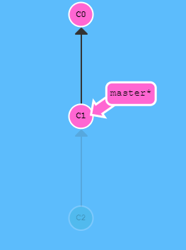
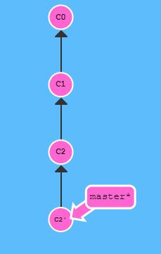

Durch git reset/revert können Änderungen in Git rückgängig gemacht werden. Es kann zwischen git reset und git revert unterschieden werden. Bei git reset wird eine Branch-Referenz auf einen anderen Commit gesetzt, er wird also auf einen anderen Commit bewegt. Um Änderungen mit anderen Team-Mitgliedern zu teilen muss git revert verwendet werden.
Um Änderungen vorzunehmen, wird git reset oder git revert verwendet
Durch die Anwendung von git reset HEAD~1 wird der master auf C1 gelegt. Also der erste Vorgänger des HEADs. Es wird nun so visualisiert, als hätte C2 nie stattgefunden. Dies ist auf dem Bild sichtbar. Reset wird eher in der lokalen Anwendung verwendet, da hier die Änderungen nicht mit anderen Team-Mitgliedern geteilt werden, wie bei git revert.
Durch git revert besteht die Möglichkeit, Änderungen mit anderen auf einem Server zu teilen. Es wird dabei das Kommando git revert verwendet. Durch das Kommando git revert HEAD entsteht ein neuer Commit, der die Änderungen aus C2 aufheben. Dadurch dass hier ein neuer Commit entstanden ist, werden die Änderungen mit anderen Teilnehmern geteilt.